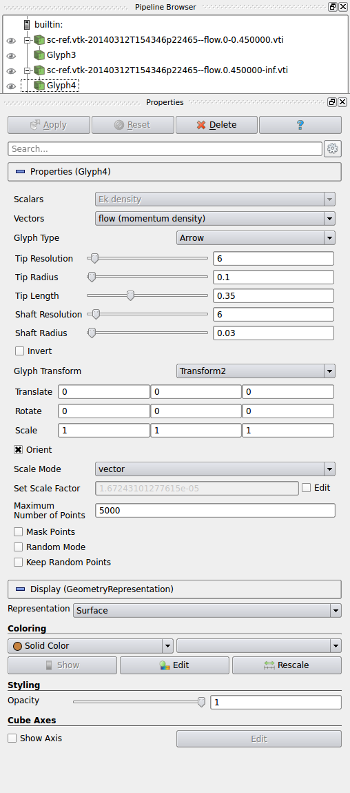
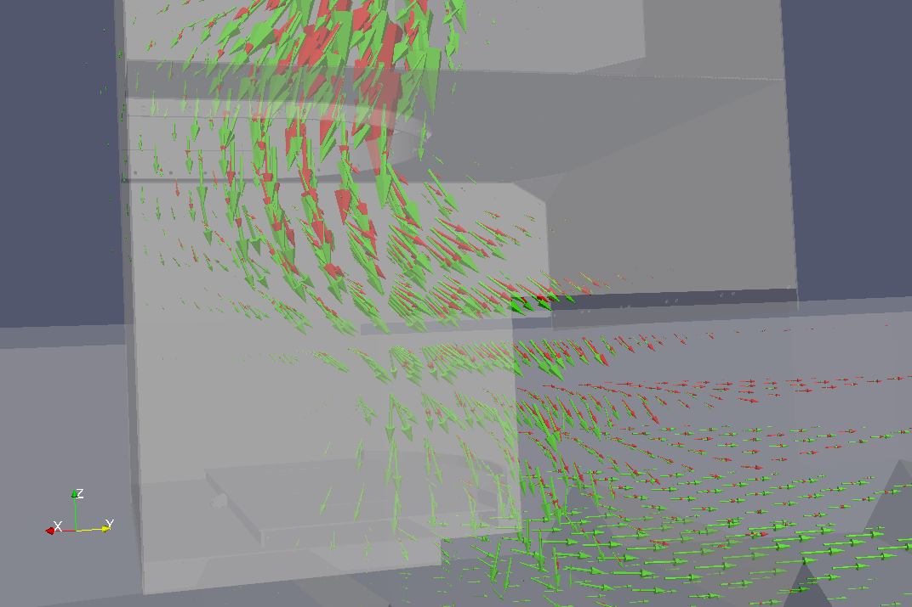
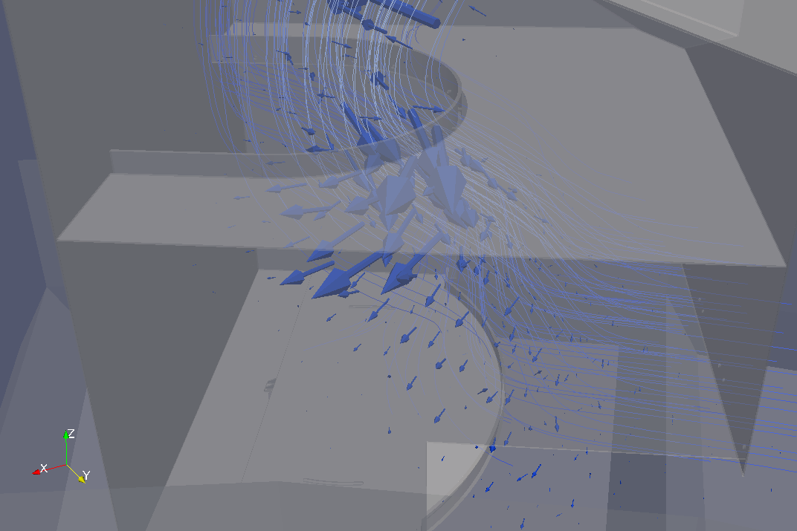
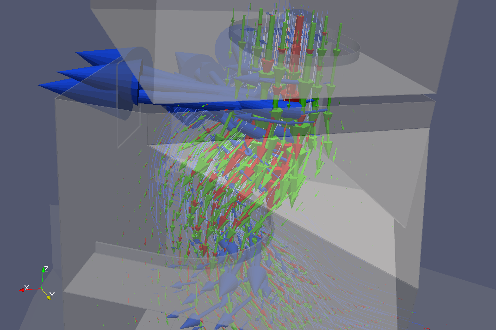
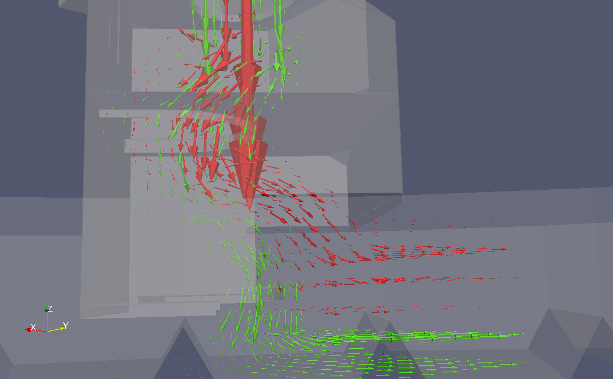

Flow analysis¶
The woo.dem.FlowAnalysis engine is used to periodically collect particle data on a given box, using uniform grid with trilinear interpolation to save values. The dLim parameter serves to define fraction limits, as fractions are observed separately.
This basic example shows flow rate (computed after the simulation) rendered as volume cloud in Paraview, along with particles and meshes being visible; in addition, StreamTracer is used to integrate the flow field and render it as lines.
Each grid cell is cube-shaped with \(V=h\times h\times h\); the data cumulated in each grid point are
flow vector computed from \(\vec{v}m/V\) (momentum per volume, unit-wise giving \(\mathrm{kg(m/s)/(m^3)=(kg/m^2)/s}\));
kinetic energy density \(E_k/(V)\);
hit count \(1/(V)\);
where each value is multiplied by its weight \(w\) respective to the grid interpolation point:
determine indices \((i,j,k)\) defining the grid cell \(\{i,i+1\}\times\{j,j+1\}\times\{k,k+1\}\) in which the point in question is contained.
compute cell-normalized coordinates \(\hat{x}=\frac{x-x_i}{h}\), \(\hat{y}=\frac{y-y_j}{h}\), \(\hat{z}=\frac{z-z_k}{h}\).
There are 8 cell corners:
grid indices
normalized coordinate
point weight \(w_i\)
\((i,j,k)\)
\((0,0,0)\)
\((1-\hat{x})(1-\hat{y})(1-\hat{z})\)
\((i+1,j,k)\)
\((1,0,0)\)
\(\hat{x}(1-\hat{y})(1-\hat{z})\)
\((i+1,j+1,k)\)
\((1,1,0)\)
\(\hat{x}\hat{y}(1-\hat{z})\)
\((i,j+1,k)\)
\((0,1,0)\)
\((1-\hat{x})\hat{y}(1-\hat{z})\)
\((i,j,k+1)\)
\((0,0,1)\)
\((1-\hat{x})(1-\hat{y})\hat{z}\)
\((i+1,j,k+1)\)
\((1,0,1)\)
\(\hat{x}(1-\hat{y})\hat{z}\)
\((i+1,j+1,k+1)\)
\((1,1,1)\)
\(\hat{x}\hat{y}\hat{z}\)
\((i,j+1,k+1)\)
\((0,1,1)\)
\((1-\hat{x})\hat{y}\hat{z}\)
which are assigned values using their respective weight \(w_i\). It can be verified that the sum of all \(w_i\) is one, i.e. that the interpolation is a partition of unity.
All quantities are finally averaged over the entire time span that the FlowAnalysis engine covers.
Fraction separation¶
Using the dLim, fractions to be analyzed separately can be defined; we name those fields \(A\) and \(B\) in the following. Fraction behavior can be inspected visually, but analysis functions harness the computer power to show relevant data only (see the documentation of woo.dem.FlowAnalysis for the reference). Some of the available functions are:
Cross-product (called
crossin the VTK files), showing rotation of one vector field with respect to another, computed simply as \(A\times B\).Flow difference (
diff), showing \(\delta_{\alpha}=A-\alpha B\), where \(\alpha=\bar{A}{\bar{B}}\) (\(\bar{\bullet}\) denotes global average norm value) making the fraction flow directly comparable.Signed flow differences for both fractions (
diffA,diffB) defined as\begin{align*} \delta_{\alpha}^A&=\begin{cases}\delta_{\alpha} & \hbox{if }\delta_{\alpha}\cdot(A+B)>0 \\ \vec{0} & \hbox{otherwise}\end{cases} \\ \delta_{\alpha}^B&=\begin{cases} \vec{0} & \hbox{if }\delta_{\alpha}\cdot(A+B)>0 \\ \delta_{\alpha} & \hbox{otherwise}\end{cases} \\ \end{align*}
In the following example, we are examining segregation in a chute. We export fractions for Paraview separately and apply the Glyph filter to both of them. Disable the Mask points option, adjust the Set Scale Factor if necessary. Set and then to set color for each fraction differently:
In our example, we obtain the following two flow fields, separately for small (green) and big (red) fractions.
{kind=link}
In the middle of this image, the big (red) fraction is going more towards the right while the small (green) fraction sinks – this show that segregation is taking place in this region. Segregation can be visualized by computing vector product of both fractions; the vectors now indicate rotation of the big (red) fraction flow with respect to the small (green) fraction flow; following the right-hand rule, if you align the right thumb with the arrow, the fingers will show how is the big (red) fraction deviating from the small (green) one (the stream lines were added for visual clarity):
{kind=link}
This can be visualized along with the flow fields (the region we were analyzing is now at the bottom of the image, and another strong segregation region is on the top):
{kind=link}
We visualize signed flow difference fields (again using different solid color for each of them); the red field shows were there is prevalent flow of the big fraction (without corresponding flow of the small fraction) and vice versa. The image therefore reveals that the deposition of particles at the bottom is irregular, since the small fraction falls down first (on the left).
{kind=link}
Tip
Report issues or inclarities to github.